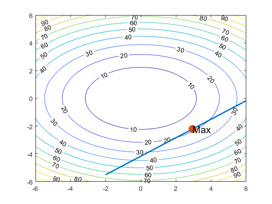
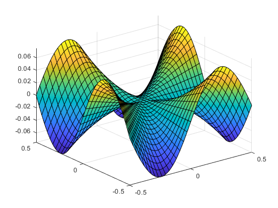

clear all;
syms f x y z Du u g
f(x,y,z) = x*y*exp(-x*z*y^3-x)+(x^2)*y*z;
g = gradient(f)
z = g(1,-1,1)
u = [4, 7,1]
v = norm(u)
Du = norm(dot(z,u))
syms a b c
a = double(norm(z))
g(x, y, z) =
y*exp(- x*z*y^3 - x) + 2*x*y*z - x*y*exp(- x*z*y^3 - x)*(z*y^3 + 1)
x*exp(- x*z*y^3 - x) + x^2*z - 3*x^2*y^3*z*exp(- x*z*y^3 - x)
x^2*y - x^2*y^4*exp(- x*z*y^3 - x)
z =
-3
5
-2
u =
4 7 1
v =
8.1240
Du =
21
a =
6.1644
syms x y k X Y real
f=x^2+2*y^2
g=4*x-6*y-25;
g1 = (2/3)*x-(25/6);
[A,B,C]= solve (gradient(f) == k*gradient(g), g==0, [x,y,k] );
[X, Y] = meshgrid (-6:.1:6 , -6:.1 :6) ;
Z=X.^2+2*Y.^2 ;
[T, h]= contour(X,Y, Z) ;
clabel(T, h) ;
hold on
fplot ( g1, [-2,6],'Linewidth',2 )
hold on
scatter (A,B, 150 , 'filled')
text (A,B, 'Max' , 'FontSize' ,15 )
hold off
f =
x^2 + 2*y^2

syms x y h n
f(x,y) = (x^3*y-x*y^3)/(x^2+y^2)
fx(x,y) = diff(f,x)
fy(x,y) = diff(f,y)
lx = limit (((((x+h)^3*y-(x+h)*y^3)/((x+h)^2+y^2))-(x^3*y-x*y^3)/(x^2+y^2))/h,h,0)
ly = limit (((((x)^3*(y+h)-(x)*(y+h)^3)/((x)^2+(y+h)^2))-(x^3*y+-x*y^3)/(x^2+y^2))/h,h,0)
lxy = limit(( ((3*(x+y)^2*y - y^3)/((x+y)^2 + y^2) + (2*x*(- (x+y)^3*y + (x+y)*y^3))/((x+y)^2 + y^2)^2)-lx)/h,h,0)
fxxy =diff(fx,y);
fyx = diff(fy,x)
lyx = limit(((2*(y+x)*(- x^3*(y+x) + x*(y+x)^3))/(x^2 + (y+x)^2)^2 - (- x^3 + 3*x*y^2)/(x^2 + y^2)-lx)/h,h,0)
fsurf(f(x,y),[-0.5,0.5 -0.5,0.5])
f(x, y) =
-(- x^3*y + x*y^3)/(x^2 + y^2)
fx(x, y) =
(3*x^2*y - y^3)/(x^2 + y^2) + (2*x*(- x^3*y + x*y^3))/(x^2 + y^2)^2
fy(x, y) =
(2*y*(- x^3*y + x*y^3))/(x^2 + y^2)^2 - (- x^3 + 3*x*y^2)/(x^2 + y^2)
lx =
(3*x^2*y - y^3)/(x^2 + y^2) + (2*x*(- x^3*y + x*y^3))/(x^2 + y^2)^2
ly =
(2*y*(- x^3*y + x*y^3))/(x^2 + y^2)^2 - (- x^3 + 3*x*y^2)/(x^2 + y^2)
lxy =
piecewise(2*x*(x^2 + y^2)^2*(y*(x + y)^3 - y^3*(x + y)) + 2*x*(- x^3*y + x*y^3)*((x + y)^2 + y^2)^2 + (x^2 + y^2)*(3*x^2*y - y^3)*((x + y)^2 + y^2)^2 == (x^2 + y^2)^2*(3*y*(x + y)^2 - y^3)*((x + y)^2 + y^2), 0)
fyx(x, y) =
(3*x^2 - 3*y^2)/(x^2 + y^2) + (2*x*(- x^3 + 3*x*y^2))/(x^2 + y^2)^2 - (2*y*(3*x^2*y - y^3))/(x^2 + y^2)^2 - (8*x*y*(- x^3*y + x*y^3))/(x^2 + y^2)^3
lyx =
piecewise((2*x + 2*y)*(x^2 + y^2)^2*(x*(x + y)^3 - x^3*(x + y)) == 2*x*(- x^3*y + x*y^3)*((x + y)^2 + x^2)^2 + (x^2 + y^2)*(- x^3 + 3*x*y^2)*((x + y)^2 + x^2)^2 + (x^2 + y^2)*(3*x^2*y - y^3)*((x + y)^2 + x^2)^2, 0)

f(x, y) = x^4 + y^4 - (4*x^2)*y + 2*y
fx = diff(f,x);
fxx = diff(diff(f,x),x)
fy = diff(f,y);
fyy = diff(diff(f,y),y)
fxy = diff(diff(f,x),y)
fyx = diff(diff(f,y),x)
assume (x ,'real' );
assume (y ,'real' );
[B]=vpasolve(fyy==0);
[A]=vpasolve(fxx==0);
[x,y]=vpasolve(fx==0);
[x,y]=vpasolve(fy==0);
[x]=vpasolve(fxy==0);
subs(vpasolve(fyy==0), [x], {A})
subs(solve(fxx==0), [y,y], {A,B})
subs(solve(fx==0), [x,y], {A,B})
subs(solve(fy==0), [x,y], {A,B})
C=subs(fyy(0,0));
C=subs(fxx(x,y));
C=subs(fx(x,y));
C=subs(fy(x,y));
fsurf(x,y,z,C)
hold on
scatter(A,B,C,100,'filled')
hold off
disp(max)
disp(min)
f(x, y) =
x^4 - 4*x^2*y + y^4 + 2*y
fxx(x, y) =
12*x^2 - 8*y
fyy(x, y) =
12*y^2
fxy(x, y) =
-8*x
fyx(x, y) =
-8*x
Error using sym>tomupad (line 1240)
Unable to convert 'struct' to 'sym'.
Error in sym (line 214)
S.s = tomupad(x);
Error in sym/subs>@(x)sym(x) (line 209)
Y = cellfun(@(x)sym(x),Y,'UniformOutput',false);
Error in sym/subs>normalize (line 209)
Y = cellfun(@(x)sym(x),Y,'UniformOutput',false);
Error in sym/subs>mupadsubs (line 157)
[X2,Y2,symX,symY] = normalize(X,Y); %#ok
Error in sym/subs (line 145)
G = mupadsubs(F,X,Y);
Error in Assignment2 (line 80)
subs(vpasolve(fyy==0), [x], {A})